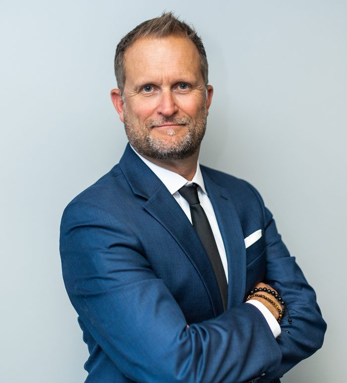
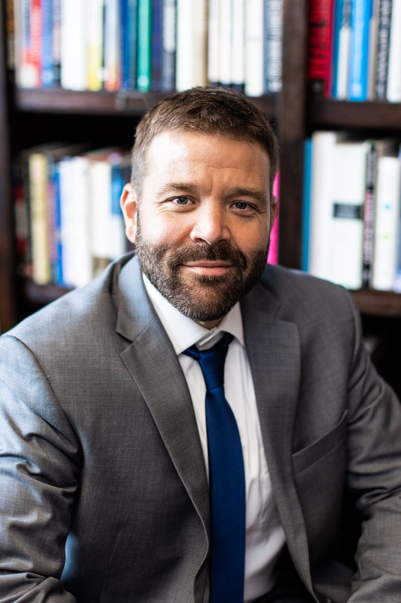
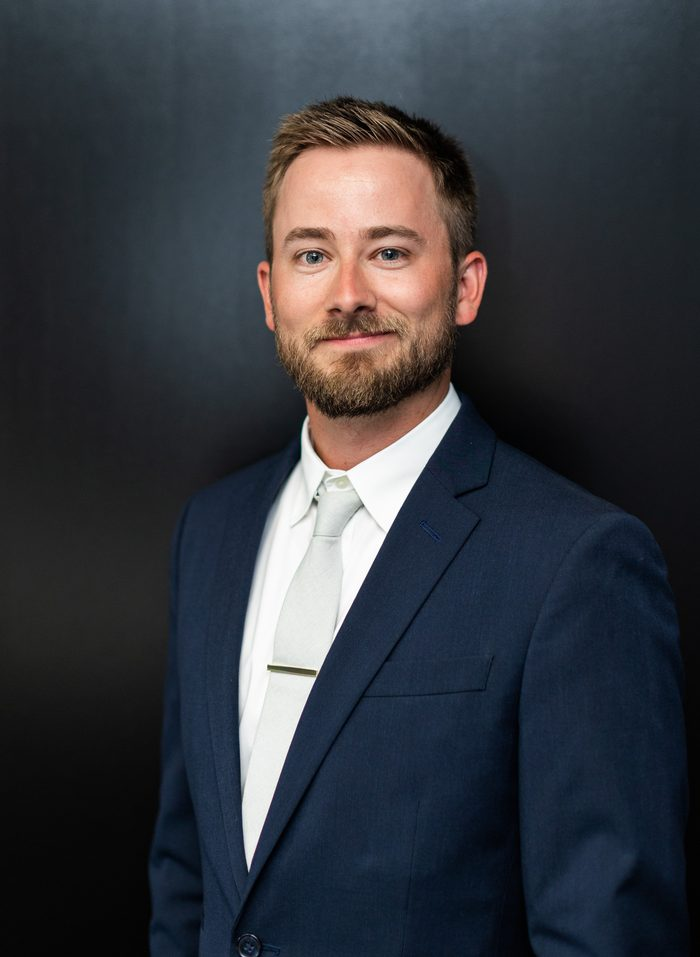
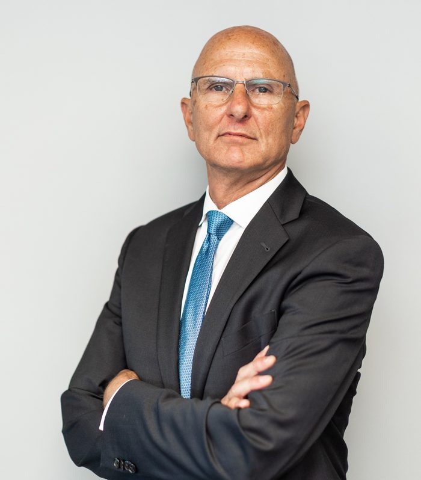

MCP Team
Martin Capital Partners, LLC, is an Oregon based, SEC Registered Investment Advisory firm managing $306 million in client assets*. Founded in 2010 and specializing in the management of dividend strategies for institutional and private clients, MCP has decades of combined industry tenure spanning multiple market cycles.
With a steadfast concentration as dividend focused investors, MCP has cultivated insight in this style of investing not found in many organizations, particularly one of our boutique size. Importantly, we believe this focus and experience leads to greater transparency and enhanced process clarity, benefiting investor outcomes.
We seek to serve our valued partners with integrity and transparency by building, managing, and preserving wealth through long-term, dividend-focused investing.
*Assets as of 12/31/2025

Cameron Martin
Chief Investment Officer

Reid Weaver, CFA
Portfolio Manager

Ryan Adair
Operations & Trading

Andy Papendieck
Client Portfolio Manager
Cameron Martin
Chief Investment Officer
Martin Capital Partners Tenure
- 16 Years
Industry Tenure
- 30 Years
Experience
- WCM Investment Management
- Solomon Smith Barney
Education
- University of Oregon
Cameron co-founded Martin Capital Partners in 2010 and is the firm’s Chief Investment Officer. From 2023 to 2025, he also co-managed the Quality Dividend Growth Fund on behalf of WCM Investment Management. Cameron started in the investment management business with Solomon Smith Barney, managing private client portfolios for the firm’s Portfolio Management Group. Additionally, he was an active member of SSB’s Portfolio Management Institute. A University of Oregon graduate, Cameron began his investment management career in 1996. He is a past recipient of the University’s Leo Harris Award, recognizing a former letterman for distinction in his profession and community.
Reid Weaver, CFA
Portfolio Manager
Martin Capital Partners Tenure
- 16 Years
Industry Tenure
- 24 Years
Experience
- WCM Investment Management
- Juniper Capital
Education
- University of Oregon
Reid co-founded Martin Capital Partners in 2010 and is a portfolio manager and research analyst. From 2023 to 2025, he also co-managed the Quality Dividend Growth Fund on behalf of WCM Investment Management. Reid entered the financial services industry in 2002 as a research analyst and trader for Juniper Capital, an Oregon-based investment advisory firm. He received a Bachelor of Science degree from the University of Oregon and is a member of the CFA Institute and the Chartered Financial Analyst Society of Portland.
Ryan Adair
Operations & Trading
Martin Capital Partners Tenure
- 7 Years
Industry Tenure
- 8 Years
Experience
- WCM Investment Management
- U.S. Bank
Education
- University of Oregon
Ryan joined Martin Capital Partners in 2019. His primary responsibilities involve portfolio administration, trading and client service, which he also performed for WCM Investment Management from 2023 to 2025. Prior to Martin Capital Partners, Ryan worked for U.S. Bank, performing operational duties in addition to working directly with the bank’s customers. He is a graduate of the University of Oregon, where he received a Bachelor of Science degree in Economics, with a concentration in banking and finance.
Andy Papendieck
Client Portfolio Manager
Martin Capital Partners Tenure
- 4 Years
Industry Tenure
- 42 Years
Experience
- WCM Investment Management
- Smith Barney
- Ragen Mackenzie
- Wells Fargo
Andy joined Martin Capital Partners in 2022. His primary role focuses on client relationships and communicating the firm’s investment philosophy and strategic thinking. He has extensive industry experience, dating to 1985, implementing investment strategies for families and business owners. Andy has worked for multiple prominent firms, including WCM Investment Management, Smith Barney and Ragen Mackenzie, as well as smaller boutique advisory groups. In addition to his work with investment clients, Andy serves as a volunteer and board member for Agape Families, which he and his wife Heather founded in 2012. He has been a long-time volunteer with the Oregon Department of Corrections, twice receiving the DOC Outstanding Volunteer Award (2011, 2014).